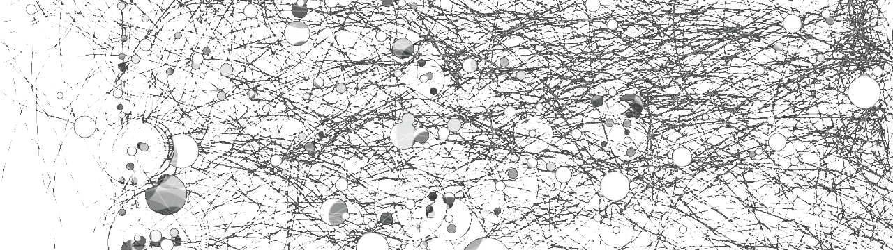

Think of everything as system, receiving matter as input, processing it and outputting a new form.
The processing part is influenced by what the system let in and out of it.
Allowing bad forms of information will lead to contamination of your system, thus, to decay.
What do you let yourself perceive?
Be around someone eating junk food, watching tiktok, procrastinating, you will be pulled towards obesity, scrolling, mediocrity.
Those examples are dots linked to the system, they are associated to it.
These can apply to any form of information: music, video content, articles, television, environment, relations.
What are the things linked to this thing? Do i want them to be linked to me and give them a chance to influence me?
Scan your environment and cut the strings